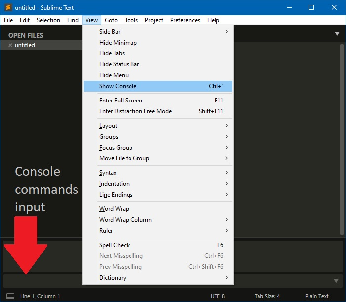
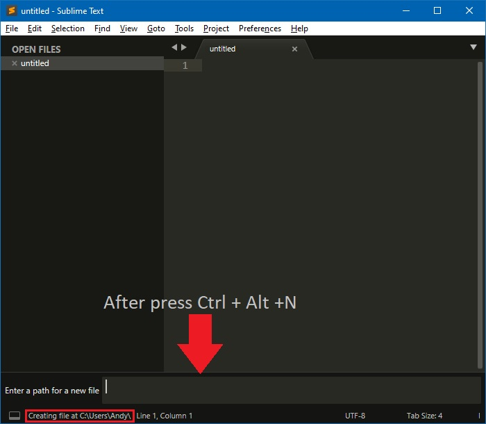
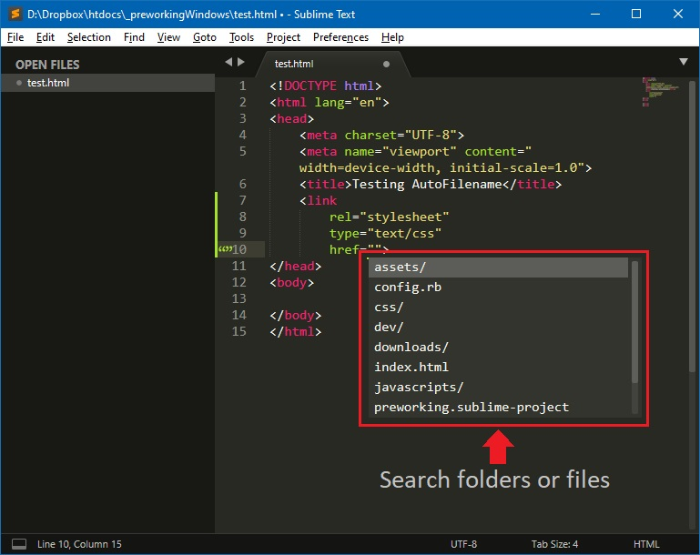

Web Browsers
Recomended browsers for web development
A set of programs to set Windows PC to Web Develpment
Recomended browsers for web development
Programs required/support plugins or extension
Run from Node.js Command-Line:
npm install -g clean-css-cli uglifycss js-beautify html-minifier uglify-js minjson svgo (Used to run minify package in Sublime Text)Run from Command-Line:
gem update --system (Update ruby files)
gem install sass (Install SASS preprocessor)
gem install compass (Install compass preprocessor)

The WSL2 requires Windows 10 1903+ with Build 18362.1049+ or 18363.1049+ in 64-bit versión (WSL Kernel Update can't be updated in 32-Bit version)
You can see actual version and build pressingWin + R, then write winver and press Enter.
Activate Windows Susbsystem for linux. Run command from Powershell with administrative rights. dism.exe /online /enable-feature /featurename:Microsoft-Windows-Subsystem-Linux /all /norestart
Activate the Virtual Machine Platform. May need to enable this CPU option in BIOS. Run command from Powershell with administrative rights.dism.exe /online /enable-feature /featurename:VirtualMachinePlatform /all /norestart
In windows 10 the "hypervisor launch type" is not configured to working WSL2, you can see the actual status with
bcdedit (Run in terminal as administrator)
if "hypervisorlaunchtype off" are displayed, then run:
BCDEDIT /Set {current} hypervisorlaunchtype auto(Run in terminal as administrator)
>>>> At this point a computer restart is required. <<<<
Download from here the Windows Subsystem for Linux 2 kernel Update. Then install it.
Run command from Powershell with administrative rights.wsl --set-default-version 2
Open the Microsoft Store and search your favorite Linux distribution or download the Ubuntu 20.04 LTS package. Then open downloaded file (Ubuntu_2004.2020.424.0_x64.appx) or run from Powershell with administrative rights:
Add-AppxPackage c:\path\to\Ubuntu_2004.2020.424.0_x64.appx
If you want, a powershell script can be downloaded to make these changes and downloads. Just run with poweshell & update_WSL2.ps1or right click on file and the click on "run with Powershell". Administrative permissions asked when runing
Change home (~) Directory:
sudo vim /etc/passwd:wq, press Enter.logoutcd ~ and press Enterpwdand press Enter/mnt/dsudo apt update to retrive the list of lastest updatessudo apt upgrade to upgrade Linux to the lastest version.sudo apt install nodejs to install nodejssudo apt install npm to install Node Package Managersudo npm install -g clean-css-cli uglifycss js-beautify html-minifier uglify-js minjson svgo to install uglify, minify, beautify packages for .css .html and .js filesgit --version to verify git installed version. Compare with the git download webagesudo apt install ruby-full to install Ruby on railssudo gem install sass to install SASS preprocessorsudo gem install compass to install compass preprocessor
Packages to install:
Package control:
Open "view" menu and click on "show console".

Insert the next code in console:
import urllib.request,os,hashlib; h = '6f4c264a24d933ce70df5dedcf1dcaeeebe013ee18cced0ef93d5f746d80ef60'; pf = 'Package Control.sublime-package'; ipp = sublime.installed_packages_path(); urllib.request.install_opener( urllib.request.build_opener( urllib.request.ProxyHandler()) ); by = urllib.request.urlopen( 'http://packagecontrol.io/' + pf.replace(' ', '%20')).read(); dh = hashlib.sha256(by).hexdigest(); print('Error validating download (got %s instead of %s), please try manual install' % (dh, h)) if dh != h else open(os.path.join( ipp, pf), 'wb' ).write(by)
For more information refer to https://packagecontrol.io/installation
All next packages needs to be installed from package installer in Package Control (SHIFT + CTRL + P > Package Control: Install pacakge), and typing the package name
AdvancedNewFile: https://github.com/skuroda/Sublime-AdvancedNewFile#usage
Advanced file creation for Sublime Text 2 and Sublime Text 3 (Ctrl + Alt + N)

Use: (Ctrl + Alt + N) bring up the AdvancedNewFile input. Then, enter the path, along with the file name into the input field. Upon pressing enter, the file will be created. In addition, if the directories specified do not yet exists, they will also be created. By default, the path to the file being created will be filled shown in the status bar as you enter the path information.
For more advanced usage of this plugin, be sure to look at Advanced Path Usage.
AutoFileName: https://github.com/BoundInCode/AutoFileName#usage

Whether your making a img tag in html, setting a background image in css, or linking a .js file to your html (or whatever else people use filename paths for these days...), you can now autocomplete the filename. Plus, it uses the built-in autocomplete, so no need to learn another pesky shortcut.
Autoprefixer: https://github.com/sindresorhus/sublime-autoprefixer#getting-started
You shouldn't have to care about vendor/old navigators prefixes. Now you don't have to!
Adding prefixes manually is a chore. It's also hard to keep track of where and which prefixes are needed. This plugin uses the Autoprefixer module to prefix properties and values according to the Can I Use database. Which means it will only add the necessary prefixes and not bloat your stylesheet. It even lets you specify what browsers you want to target. In addition it will remove existing prefixes which are no longer needed.
Works with CSS and SCSS, but not other preprocessors.
BracketHighlighter: https://facelessuser.github.io/BracketHighlighter/usage/
BracketHighlighter matches a variety of brackets such as: [], (), {}, "", '', <tag></tag>, and even custom brackets.
This was originally forked from pyparadigm's SublimeBrackets and SublimeTagmatcher (both are no longer available). I forked his repositories to fix a number issues I add some features I had wanted. I also wanted to improve the efficiency of the matching. Moving forward, I have thrown away all of the code and have completely rewritten the entire code base to allow for more flexibility, faster matching, and a more feature rich experience.
Set in Sublime Text user preferences (Preferences > Settings), next lines to avoid conflicts with BracketHighlighter
"match_brackets": false,
"match_brackets_angle": false,
"match_brackets_braces": false,
"match_brackets_content": false,
"match_brackets_square": false,
"match_tags": false
Comment-Snippets: https://github.com/hachesilva/Comment-Snippets#comment-snippets-for-sublime-text
Several snippets to create some fancy PHP, CSS and HTML comments in Sublime Text.
Compass: https://packagecontrol.io/packages/Compass
Adds a Build System for Compass Watch when opening SASS Files. (Sublime-Text-2-SASS-Package or similar SASS Package needed). Create a project and place the Sublime Text Project file in your project's folder root. Example: yourproject/project.sublime-project A Sublime Text Project File in the root of your project is necessary.
REMEMBER A config.rb file is created when save/build a SASS file, move the file to project root and edit to match the folders tree and set the "output_style" (:nested, :expanded, :compact, :compressed). More infor at Compass documentation
Emmet: https://github.com/emmetio/sublime-text-plugin#emmet-2-for-sublime-text-editor
Emmet is a plugin for many popular text editors which greatly improves HTML & CSS workflow. Read the Cheat sheet for use
HTML-CSS-JS Prettify: https://github.com/geekpradd/sublime-html5-minifier#sublime-html5-minifier
This is a Sublime Text 3 Plugin for reducing the code size of HTML5, CSS3 and Javascript files.
Use: In order to minify code, Click on the Tools menu and click Minify Current File. A .min file be added onto the current directory where you are working.
Alternatively, Right Click on the Editor area or the sidebar and click 'Minify HTML5 File'.
Language - Spanish: https://packagecontrol.io/packages/Language%20-%20Spanish
Add Spanish spelling languages to your Sublime Text editor. Based on dictionaries Spanish from titoBouzout and superbob.
"dictionary": "Packages/Language - Spanish/es_ES.dic",LiveReload: https://github.com/alepez/LiveReload-Sublime Text3
{"enabled_plugins":["CompassPlugin","SimpleReloadPluginDelay"]}To run goto Preferences > package settings > LiveReload > plugin-ins enable/disable. Then select Enable/Disable 400ms an activate from navigator the extension clicking
Minify: https://packagecontrol.io/packages/Minify
Es requerido guardar la siguiente configuracion en el archivo de usuario de minify: Preferences > Package settings > Minify > Settings - User
Para que en HTML elimine los saltos de línea"html-minifier_options": "--collapse-boolean-attributes --collapse-whitespace --html5 --minify-css --minify-js --process-conditional-comments --remove-comments --remove-empty-attributes --remove-redundant-attributes --remove-script-type-attributes --remove-style-link-type-attributes --quote-character '",
Powershell: https://packagecontrol.io/packages/PowerShell
Adds support for the MS PowerShell programming language syntax.
SublimeREPL: https://packagecontrol.io/packages/SublimeREPL
SublimeREPL is a plugin for Sublime Text that lets you run interactive interpreters of several languages within a normal editor tab
SASS: https://packagecontrol.io/packages/Sass
Includes completions for CSS properties and values, as well as relevant Sass functions. Highlights code using up to date specifications for properties and values to help you catch typos. Syntax highlighting should be very similar to CSS and LESS (which is maintained in parallel).
SASS build system for Sublime Text 2: https://github.com/jaumefontal/SASS-Build-SublimeText2
Provides two Build system for SASS files (with and without compression)
SublimeOnSaveBuild: https://github.com/alexnj/SublimeOnSaveBuild
This is a simple plugin for Sublime Text to trigger a build on each save.
Sidebar Enhancements: https://packagecontrol.io/packages/SideBarEnhancements
Provides enhancements to the operations on Sidebar of Files and Folders for Sublime Text.
{kind=link}
{kind=link}
{kind=link}